← 返回阅读库 · 原论文目录
论文讲解阅读文档 · 表征学习 · v157
Deconstructing Denoising Diffusion Models for SSL[2401.14404]
视频时长 00:29:59；讲解文字 12,498 字符；提取讲解画面 65 张。按视频原顺序阅读，每段文字保留时间戳。
文字来自整段视频的自动语音转写，按自然停顿分段，并与 PPT / 论文页面 / 演示画面对齐。未将讲解压缩为摘要；术语、数字和口述公式请结合画面及原论文核对。 阅读稿已校正规范部分明确术语误识别；原始逐字稿和每处修改记录另行保留。
讲解画面为源视频截图（640×360），不是可编辑 PPT 文件。全片按每秒 2 帧扫描内容变化，逐步展开页保留；连续动画保留代表画面。清晰度受源视频限制。
下载完整资料包 · 含离线 HTML、PDF、Word、全部 PPT 画面和字幕。
原论文与材料
Deconstructing Denoising Diffusion Models for Self-Supervised Learning · 下载完整 PDF（10 页）
按时间阅读
00:00:00–00:00:09 · 画面 001
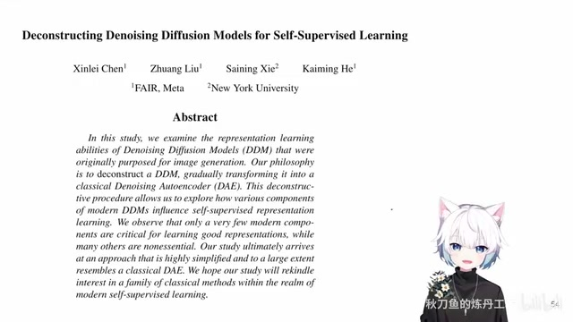
00:00:00–00:00:09 · 画面 001大家好,今天我们来快速说一篇论文 Deconstructing Denoising Diffusion Models for Self-Suised Learning 这一篇就是用我们的 Diffusion Model 去做一个 Self-Suised Learning 去学一个好的 Image Encoder,好的 Representation 出来那么在这个过程中我们突然意识到这个 Diffusion 这个过程它不断加噪,减噪的过程跟我们最开始自监督的 Denoising Autoencoder 它是有很多相似之处的
00:00:09–00:00:10 · 画面 002
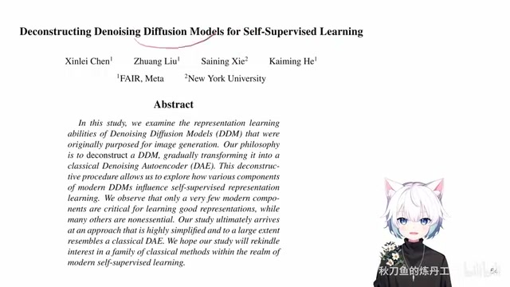
00:00:09–00:00:10 · 画面 00200:00:10–00:01:25 · 画面 003
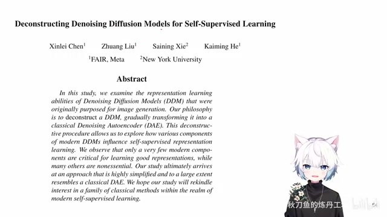
00:00:10–00:01:25 · 画面 003所以本篇文章的亮点就在于如何把我们现代的这些 diffusion model 的设计一步一步的给它拆开拿掉，最终还原到 denoising autoencoder 上，让我们更好地去了解在这十几年的过程中我们中间的各种设计都进行了哪些迭代。那么当然在我们开始之前，我还是要说这篇文章的首先它的呈现是很清楚直接的，你阅读起来应该不会有什么障碍。
所以这也就意味着这个视频会是一个无聊的视频，我毕竟也只是把它的文章从头到尾给你读一遍而已，甚至还是有些细节我是不会读到。我一直是推荐你去阅读原文的，但是这篇文章在我们动态里的呼声又是非常的高，看到大家这么热情，什么都不说你们又要不高兴。所以呢，我们今天还是把这个视频来录一下，也是借着这个机会呢，按着我把这个文章好好读一下。好的，那么我们来看到 computer vision 的这个学者一般认为这个 self-supervised learning 自监督的这个源头是什么，这个 denoising autoencodersDAE，这是他原始论文中的一个图啊，其实写过来跟这边一样，就是我一张图像，我去给他人为的加上这些噪声。
00:01:25–00:01:37 · 画面 004
00:01:25–00:01:37 · 画面 00400:01:37–00:01:38 · 画面 005
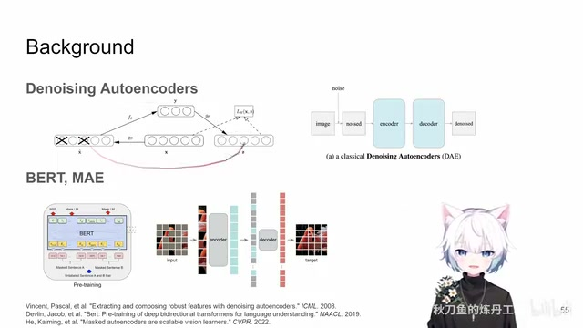
00:01:37–00:01:38 · 画面 00500:01:38–00:02:13 · 画面 006
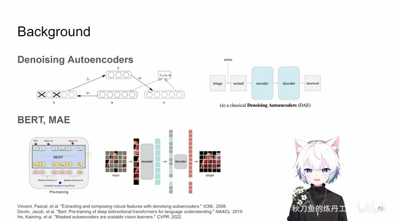
00:01:38–00:02:13 · 画面 006虽然这里他用 X 表示，他表示把原来的信息破坏掉了，实际上呢，他做的操作是加了噪声，然后呢，把这个加噪了之后的这个图像送到我们的一个网络里面，那么这个网络的目的呢，就是希望通过我们这些含有噪声的样本去把这个不含噪声的样本给它预测出来，然后呢，我们的监督的 Loss 也很简单，就是这个预测出来的这个 Denoising 的这个样本和原始的样本来进行比较。
最早的一个自监督的这样一个框架就建立起来了，那么这个图在现代的表示呢，你可以画成这个样子，那么在这个过程中呢，除去原有的真正的给这个 noise 的图像去 denoise 这样一个过程，我们发现这个 encoder 和 decoder 之间，我们这个地方取出来的这个 tensor 或者说我们训练出来的这个 encoder，它其实是可以作为很好的一个 representation 来帮助我们去解决其他的下游任务。
00:02:13–00:02:14 · 画面 007
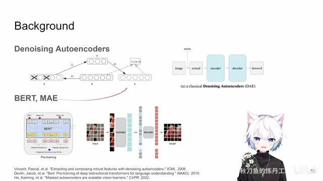
00:02:13–00:02:14 · 画面 00700:02:14–00:02:20 · 画面 008
00:02:14–00:02:20 · 画面 00800:02:20–00:02:21 · 画面 009
00:02:20–00:02:21 · 画面 00900:02:21–00:02:44 · 画面 010
00:02:21–00:02:44 · 画面 010那么这个呢，是最开始的这个 denoising autoencoders2008 年的事情，那么后来随着一直发展到这几年来呢，我们有类似的思路的文章有包括比如说 bert，你在 preshrine 的时候把一整句话里面的个别的 token 给它抹除掉，然后去尝试恢复这些 tokenMAE 也是一整张图像，我把里面的这个。
00:02:44–00:02:45 · 画面 011
00:02:44–00:02:45 · 画面 01100:02:45–00:03:23 · 画面 012
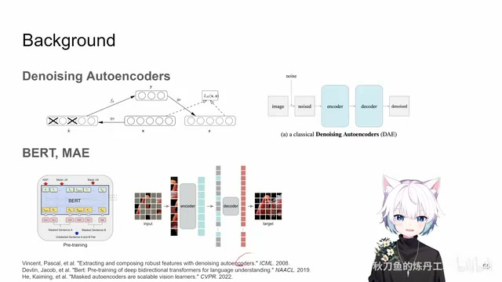
00:02:45–00:03:23 · 画面 012大部分的一些 patch 都给它拿掉，只用可见的这些 patch 提 feature，然后呢，再把这个 mask token 填充进来，这个拿掉了这些 patch 的位置，最后呢，把一整张原始的图片给它建出来，这两个文章就有代表性了，但是呢，这两篇文章跟我们之前最开始的这个 denoising autoencoder 它有一个很显著的不同。
00:03:23–00:03:24 · 画面 013
00:03:23–00:03:24 · 画面 01300:03:24–00:03:42 · 画面 014
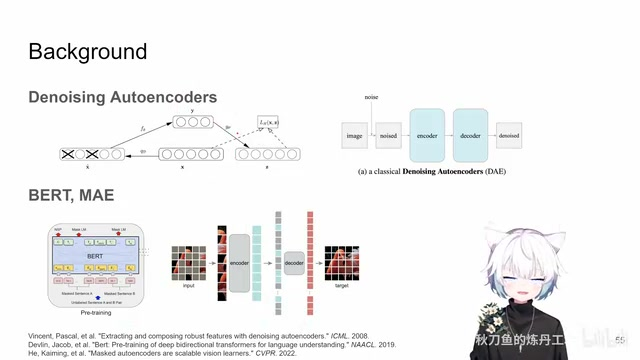
00:03:24–00:03:42 · 画面 014就是在 BERT 和 MAE 当中，你是都知道我们被 MAX 掉的地方是在哪里的，而对于原来的 Denodding Auto Encoder 的设计，整张图上随机的加噪声，你也不知道加在哪里，你也不知道加上去的强度是怎么样的，所以在这个层面上，本文研究的 Diffusion Model 和我们最开始的 Denodding Auto Encoder 它们是非常相似的同时，比如这篇我们介绍过的 Soda。
00:03:42–00:04:43 · 画面 015
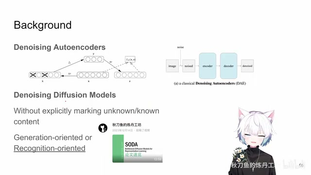
00:03:42–00:04:43 · 画面 015这篇文章里面的观察就发现，虽然我们 Diffusion Model 常常用来做图像的生成，但是做图像生成的这种 Diffusion Model 它提出来的 feature 不一定适合做后面比如说后续的识别这样的任务，所以本文就研究了我去怎么样通过各种设计去做一个对我们后续识别任务有利的这样一个 Diffusion Model，而不是关系于生成这样的任务。
这个呢是本文的核心，那么下面呢，作者就要开始从一个现代的 denoising diffusion model 一个标准的 diffusion model 给它逐步的还原到这个 denoising autoencoder，一步一步还原回去，在这个过程中呢，我们理解哪些成分是对我们的性能特别是对这个后续的这种识别的性能是最有帮助的。
好的，那么我们这里快速回顾一下这个 Denoise Diffuser Model，现在的这些 Diffuser Model 的设计，假如说我们原始的数据我们叫它 Z0，那么 Diffusion 呢就是一个逐步加噪，把这个复杂的 Z0 通过不断的灌注我们设计好的噪声，最终呢整个这个 Z0 它所在的这个 Distribution 变成了一个好的数学上好的比如说 Gaussian Distribution 这样的一个东西，那么在每一个加噪的时刻呢，对吧，这个含噪的样本是一个
00:04:43–00:06:43 · 画面 016
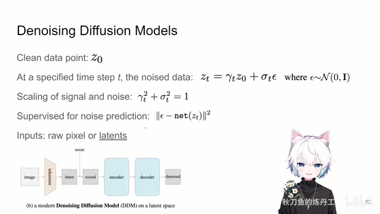
00:04:43–00:06:43 · 画面 016高斯噪声的和原始这个数据的它们的一个加权的和，那么这两个权重呢，这个γt 和这个σt 它们的这个平方和是 1，那这样子呢，我们就把一个减寒噪的一个样本给它构建出来那么构建出这样一个要门之后呢，我们把它送到我们的网络里面，我们的网络呢其实是预测我们相对于原始的这个 Z0 我们加了多少的噪声，通过这样的一个监督的信号把我们的网络就给它训练起来了然后你在实际推理的时候，假如说你是想从一个随机的噪声从我们构建的高斯分布里面抽一个随机的样本，然后生成一个和 Z0 差不多的这样一个样本，你就不断的在噪声上去施加我们降噪网络，一次降到一点，一次降到一点，这样子一次一次迭代就最终能够产生这样的一个样本，但是如果你是只想用它作为一个 feature 作为一个 encoder
你就直接把干净的数据输到我们的这个交道网络里面，你再从中间这个 encoder 位置给它截出你想要的 representation 就可以了那回到这里这个 z0 呢，当它是一张图像的时候，它的像素呢可能是非常高的，我们实际上也不想处理这么多像素，因为像素之间它们的相关性是很强的，所以呢我们会常常使用一个额外的 encoder，或者呢我们用 vit 里面这一套的术语对吧，tokenizer 一个 patch 一个 patch 的处理，我们把原始的图像给它先降维到一个 latent space，然后呢再去做我们加噪还原的过程
00:06:43–00:06:54 · 画面 017
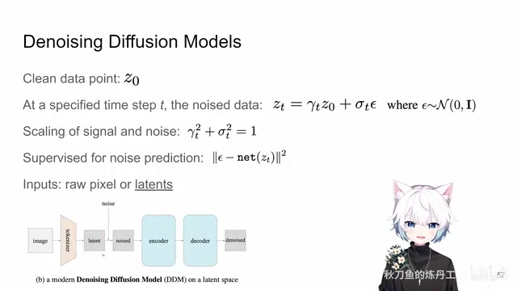
00:06:43–00:06:54 · 画面 017那所有的这样的操作呢，默认呢我们都是在这个 Latent Space 里面进行的，那这个呢是一个非常快速的 Diffusion Model 的一个回顾，那在本文里呢，作者就盯死了这个 Diffusion Transformer，我们就拿它来做研究，那这篇文章因为 OpenAI 的那个 Sora 又突然的在网上火起来了，这个网上也是有很多视频来去介绍了，所以我觉得我也不用出这个视频来单独谈一下它了
00:06:54–00:07:11 · 画面 018
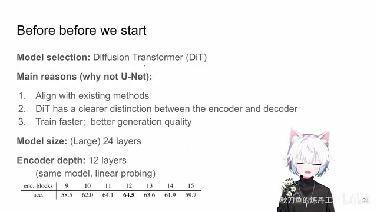
00:06:54–00:07:11 · 画面 018那在这里呢，简单的介绍一下 diffusion transformer 这个东西啊，对比一下它和这个 unet deletion diffusion 里面的 unet。那除去正常处理图片的部分，unet 在添加这个各种 condition 的时候呢，它是中间有这个 cross attention layer，把我们图像这个带噪了这个图像的各种 token 和我们的这个新的条件做 cross attention。
00:07:11–00:08:50 · 画面 019
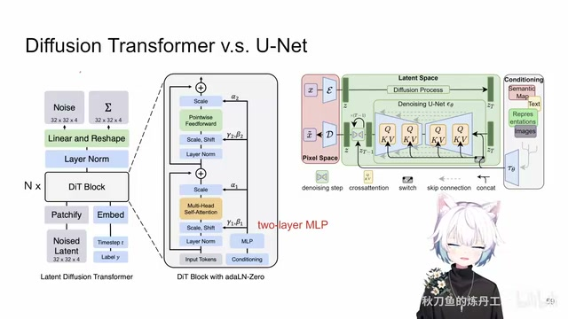
00:07:11–00:08:50 · 画面 019这个是 unit 的设计但是类似的设计呢在这个当你使用 transformer 的时候呢其实它的效果呢并不是这么好那这里呢作者提出了说我用这样的一个结构你看到所有的 condition 加上 timestamp embedding 就是一个 vector 嘛它送到一个两层的 MLP 里面那么这个 MLP 呢负责产生每一个 transformer layer 里面的这个 scale 和 shift用它预测的值来去替换 LayerNorm 里面的 scale 和 shift 两个参数，进而达到调制这个 token 的目的，那么在此基础之上作者还加了一个 zero 的设计，就是我的 MLP 额外预测一个 alpha 参数，这个 alpha 的参数乘上你的 multi-head attention 它的输出然后作为 residual 加到你原始的数据上
但是呢这个 alpha 呢一开始呢它是被人工的初始化的时候把这个网络的一个 alpha 这个位置给它置零这样子呢就是一开始我们没有 residual 这个连接然后后面呢随着训练的进行网络自己去学会把这个 alpha 加上那么这个呢是 diffusion transformer 的核心的设计那么作者的实验呢发现它相对于你在 transformer 里面直接使用 cross attention 效果是要好的那当然这些实验呢都是在针对图像生成的这样的一个情景下
00:08:50–00:09:08 · 画面 020
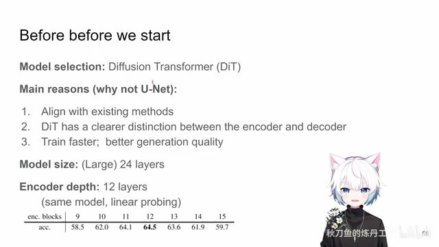
00:08:50–00:09:08 · 画面 020那为什么要研究这个呢作者说你看现在的这些 self-supervised learning 的方法他们哪个 backbone 用的不是 Vision Transformer 对吧你要对齐他们然后呢 DIT 这个东西你都是 Transformer 嘛你从中间随便 P 一层就是这个 Encoder 和 Decoder 就能分开了不像你这个 U-Net 你 P 开之后前后两层还有这个 Skip Connection 还有这连接藕断丝连这种东西不太好那第三个呢就是这个 DIT
00:09:08–00:09:09 · 画面 021
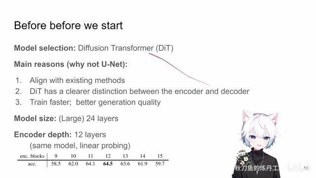
00:09:08–00:09:09 · 画面 02100:09:09–00:09:42 · 画面 022
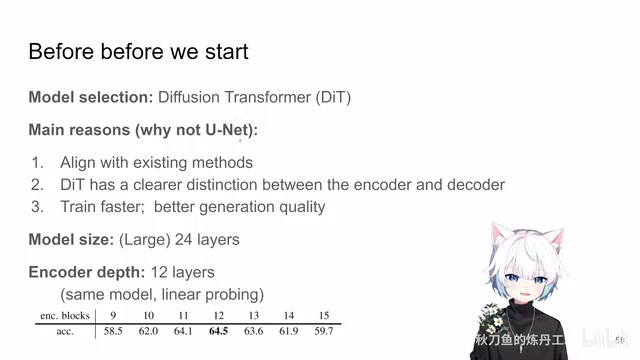
00:09:09–00:09:42 · 画面 022他会训练的更快有更好的 generalization 的这样的性能那这个呢就是作者的理由那这里呢他选的是这个 large 尺寸的有 24 层 transformer 那你其实中间哪一层 encoder decoder 都可以分开对吧那这里呢作者用的是在中间就正中间 12 层这个位置分开那么当然呢其实你看后面的附录你发现这个数他也不是正好取在中间他是有这个实验支持的那更具体来说呢就是他使用了一个 vqgan 的一个 encoder
00:09:42–00:10:14 · 画面 023
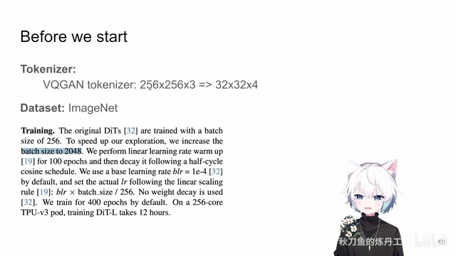
00:09:42–00:10:14 · 画面 023把一整张图像变成了 32x32x4 的这样一个 latent 然后呢你再做后面的处理那这里呢作者使用 ImageNet 把这个 DIT 呢就开始训练了一遍只不过这一次呢我们更关注的是训练结束之后我们把这个 encoder 拿出来它的这个 representation 的这个表达能力是怎么样的而不是说我这样子训出来一个 DIT 之后它做图像生成的性能是怎么样的那这个表达能力的考察呢，就是做了 linear probing。我们知道，我们在评估 self-supervised learning 方法的时候，常用的这个测试的方法有 KNN 直接的做 retrieval，有这个 linear probing，有这个 fine-tuning。
00:10:14–00:10:49 · 画面 024
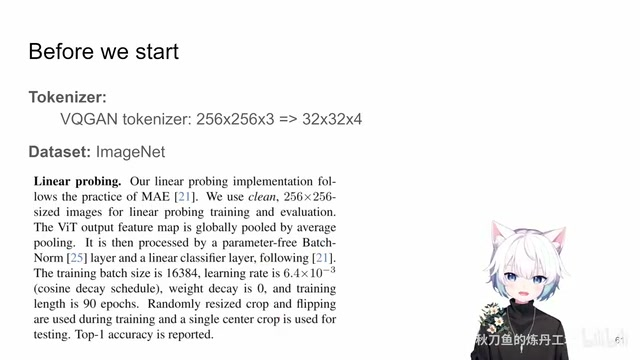
00:10:14–00:10:49 · 画面 024这里用了一个代价相对小但是这样一个 linear probing 就是你用 global average pooling 把所有的 token 弄成一个 token 把每张图所有的 token 弄成一个 token 然后送到一个 linear layer 里面去做你下游的分类任务这个时候你只训练你的 linear layer 这是它的一些训练参数然后你就看这样的训练之后性能是怎么样的这里我们看到假如说我们直接用 dit 拿过来它
00:10:49–00:11:06 · 画面 025
00:10:49–00:11:06 · 画面 025训练好之后做 classification 做图像生成的质量看到 fid 但是你看到为什么我们 probing 这里数字是灰色的这不对劲为什么因为在我们的 dit 的训练过程中
00:11:06–00:11:07 · 画面 026
00:11:06–00:11:07 · 画面 02600:11:07–00:11:59 · 画面 027
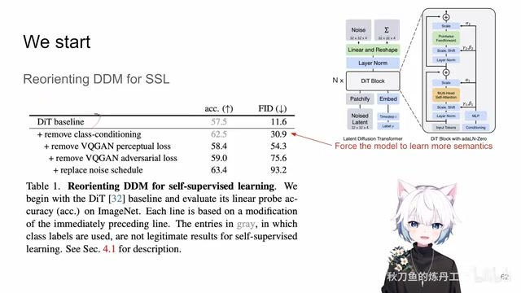
00:11:07–00:11:59 · 画面 027我们来看到这边这个 DIT 的结构它是要拿到 label 的也就是说我是使用了 ImageNet 里面的标签来去编辑这个 embedding 相当于我是加了这个 condition 就是我想生成什么样的内容在这里面所以这并不是一个自监督的配置这里作者就把它的颜色弄灰了然后作者就开始尝试更改里面的各种设计让我们的 DIT 不是去做生成的任务而是帮我们去做图像分类的任务那我们来看一步一步的首先呢作者把这个 conditioning 去掉了就是这个 embedding 就去掉了我们所有的图像我也不分哪个类是哪个类大家一起训练这才是一个自监督学习应该有的样子对吧但是呢这个数字还是灰的哎这不对劲啊我们还在哪里用了 label 呢其实呢 label 用在了这个 vqgan 的里面我们来看到呢这个 vqgan 其实是这里作者用的是这个 improved vqgan 这个 vit 的 vqgan
00:11:59–00:12:50 · 画面 028
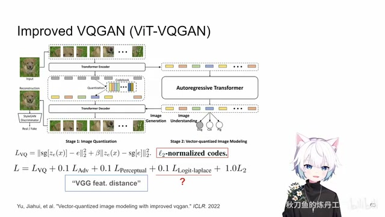
00:11:59–00:12:50 · 画面 028你看这个 vq 的部分，我们的 encoder 出来的这个 embedding 要向我们词典中的这个 vector，然后呢，我们这个词典的 vector 要逐渐向我们当前的这个 embeddingencoder 出来的 embedding 靠拢双向奔赴这么一个过程。那同时呢，相比之前的这个标准的这个 VQGAN，这个标准的 VQGAN 我们是出视频介绍过的。那么这里呢，codebook 就是我的这个码表里面所有的 embedding 都是 L2 normalized 这样子呢，我们的码表就更有表达能力。那么当然这里作者还有一个改进是使用更小的这个码表等等等等。那么这个呢是 vector quantization 的部分
那这个时候我们外面还有 Decoder 这些东西呢，对吧？所以它最后训练的总的 loss 是长这个样子，前面 VQ 的部分
00:12:50–00:12:51 · 画面 029
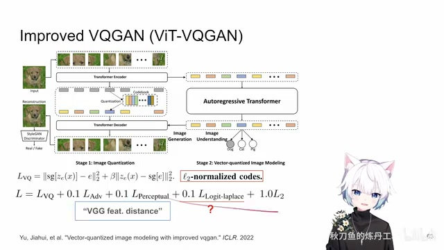
00:12:50–00:12:51 · 画面 02900:12:51–00:13:42 · 画面 030
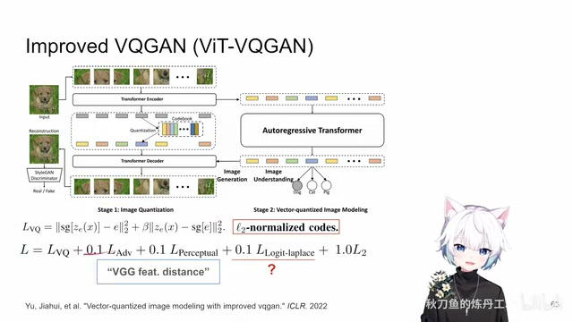
00:12:51–00:13:42 · 画面 030然后因为是个 GAN，所以它有一个 discriminator 来看我们图像重建的质量。这里有一个 loss。那么关键在于下面这个 proceptor loss，它使用一个在 ImgNet 培训好的 VGG，用它作为一个 feature encoder，把我们的 feature 图像的 feature 给它提出来。这个时候它希望我们模型产出的图像和 GroundTools 里面相同类别的图像它们是相近的。你这个时候谈到相同类别就用到 ImgNet 里面的 label所以在训练 VQGAN 的时候，它是有 label 的信息从 perceptual loss 里面就流进来了。所以我们说这样子它不是一个严格的自监督的过程。这个点在这里。那么当然还有后面的 loss，像 L2 loss 就是 reconstruction，你重建后的图像跟输入的图像它的 L2 MSE 存在疑点是拉普拉斯 loss，它的实现作者没有详细的说
00:13:42–00:13:43 · 画面 031
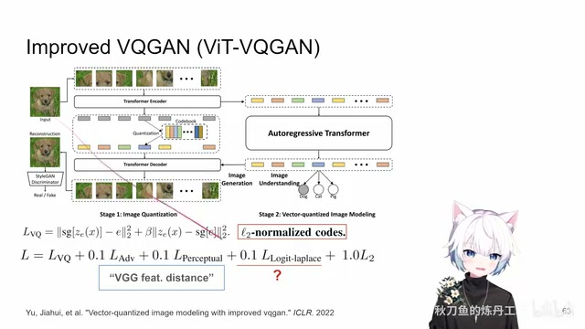
00:13:42–00:13:43 · 画面 03100:13:43–00:14:04 · 画面 032
00:13:43–00:14:04 · 画面 032那作者说你可以把它理解成一个 normalize 之后的 L1。那言下之意呢，似乎就是说它是用来做重建的 Loss。但是具体的实现呢，我也没有找到。所以有从事这个方向的朋友呢，欢迎指点那总之这一串 loss 下来，我们就有一个好用的这个 vq 干。那我们也知道了这个 label 是从这里灌进来的。所以呢，接下来我们为了要把这个 label 拿掉，那就是我们把这个 loss 去掉，只使用这些 loss 去单独重新训练一个 vq 干。然后呢，再做我们下面的实验
00:14:04–00:14:05 · 画面 033
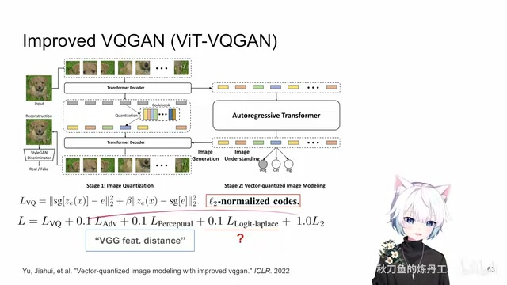
00:14:04–00:14:05 · 画面 03300:14:05–00:14:22 · 画面 034
00:14:05–00:14:22 · 画面 03400:14:22–00:15:11 · 画面 035
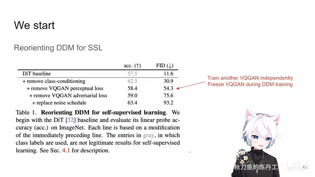
00:14:22–00:15:11 · 画面 035这个呢就是作者做的事情。你看到他这里把这个 perceptual loss 直接给他拿掉了。甚至后面还有的实验把 adversarial 就是那个 discriminator 这个 loss 给他拿掉了。他重新单独训练了两个 vqgan。那训练好之后呢，这个 vqgan 的 encoder 就给他锁入。然后呢，用这个 encoder 去帮助我们去训练这个 dit。那这个呢是这两组实验，你可以看到呢，没有了这些 condition，没有特别是这些 label condition，我们的这个生成的质量
瞬间就变得很低了。其实也不一定是生成质量低，就是我们也没法控制我们生成的图像是什么类别了。然后它就可能跟一个差别很远的类别来做比较，所以这个 distance 远是很正常的。但是我们发现做 classification 做 linear probing 它的性能就是逐渐上升了。所以对于自监督来说，它的 representation 的性能跟我们图像生成的质量是没有关系的。这个是一个很重要的结论
00:15:11–00:15:53 · 画面 036
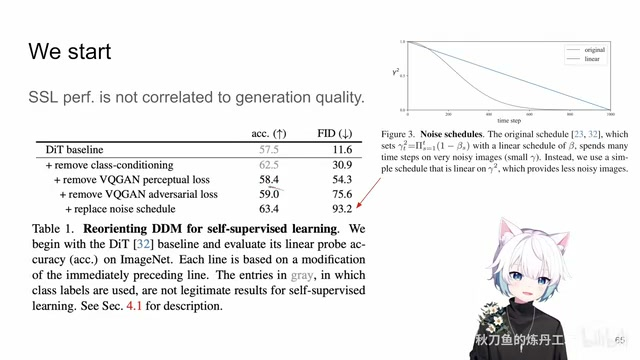
00:15:11–00:15:53 · 画面 036那再往下呢，作者还试着更改这个 noise scheduler。就是我们来看到原来对吧，随着时间的增加，你的两个这个权重是怎么变化的。原来是这条灰色的线。那作者直接简单一点做 linear。发现呢，自监督这块的效果呢是显著的变好，但是生成质量呢显著的变差。进一步印证了这个结论。那这里呢是作者第一部分对于这个 VQGAN 的一个观察那这个时候呢，我们还是用一个 VQGAN 的 encoder 把一张原始的图像压缩到 latent。那再往下呢，我们作者就想，我们能不能更直接一点再去仔细的敲打敲打这个 tokenizer，让它呢变得像原始的这个 DAE 一样。那这个时候呢，作者就开始尝试了四种不同的设计。首先呢就是第一种，我训练一个卷积式的 VAE
00:15:53–00:16:19 · 画面 037
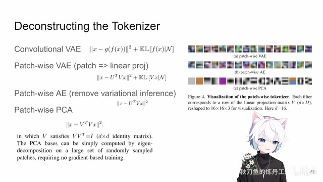
00:15:53–00:16:19 · 画面 037那它的两个 lossreconstruction loss 还有这个 kl divergence，让你的这个 encoder 的输出更接近这个 normal distribution 这个呢，我们之前有视频介绍过了。那再往下，patchwise ve，那我再简单一点，连这个 cnn 也不要了。我现在呢，每一个 patch 我就把它视成一个很长的一个 vector，在这个配置里面，我的 encoder 和 decoder 都是一个 linear projection，就是一个矩阵的乘法
00:16:19–00:16:20 · 画面 038
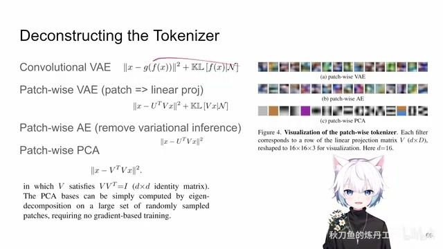
00:16:19–00:16:20 · 画面 03800:16:20–00:16:46 · 画面 039
00:16:20–00:16:46 · 画面 039那在这种情况下，相应的 loss 会怎么样呢？对吧，这时候你发现原来的这个 decoder 和 encoder 直接就变成一个矩阵乘法了，loss 本身还是一样的。那这是第二种设计。那第三种设置呢，再简单一点，我把这个 variational 去掉，我就是一个 autoencoder，只不过呢，它是一个 patchwise，也就是我一个 token 一个 linear projection，也就是我一个 image patch 做两次 linear projection，尝试给它重建出来，这个呢是第三种设计
00:16:46–00:16:47 · 画面 040
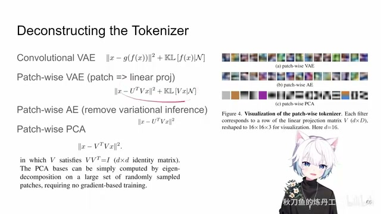
00:16:46–00:16:47 · 画面 04000:16:47–00:18:29 · 画面 041
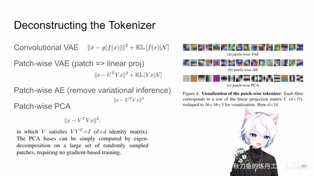
00:16:47–00:18:29 · 画面 041那我们能不能再极端一点？因为你看这个地方，我们毕竟还是要学两个 projection。再极端一点，有没有一种现成的工具能够帮助我们把一个很长的 vector 的维度给它降下来呢还真有，主成分分析 PCA。这个时候你也不用学任何东西了，你就抓上一大把样本，把它们就排成一个大的矩阵，做主成分分析，特征值一球一排序，把我们重要的几个主成分挑出来，然后就组成投影阵，经过它的一次投影，从大 D 的一个长度压到一个小 D 的这样一个长度，然后再反向的投影回来，把你的原始的样本重建出来。这样子来做，没有任何训练参数，没有中间商赚差价
那这里呢，作者做了一个可视化对吧？我们的这个 projection 这个矩阵，它是把我们大第一个长度的 vector 投影到这个小第一个长度的 vector。那么这个图像呢，就显示这个 16 个元素里面每一个元素它对于这个 patch 各个位置上的权重就显示出来了，因为我们就做了非常简单的投影所以可视化也是很直接，这个时候你发现 PCA 能够形成一些视觉上有意义的这些 filter，这些 low level 的 filter 能够帮助我们提一些特征。这是一个很有意思的事情。我们来看经过这样 4 种不同的 tokenizer 设计，我们的性能是怎么样的。这里作者讨论了我们的 linear probing 的性能，同时也尝试了不同的 latent 它的尺寸，就是我们之前小弟的值从 8 到 128
00:18:29–00:19:00 · 画面 042
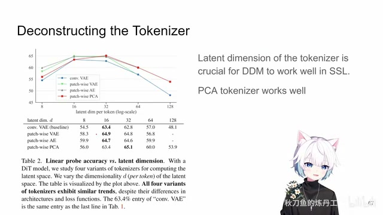
00:18:29–00:19:00 · 画面 042那发现呢，这个 Patchwise PCA 你虽然不用学任何东西，那它本身就很能打，这是一个非常有意思的观察。同时呢，你看到对于所有这些 Tokenite 的设计，它们对于 latent 的这个尺寸都是非常敏感的。那当然你说，我就是投铁，我想使用原始的像素怎么样呢？这个时候作者也是了对吧？我就是不做任何的这个 projection，我只是单纯的把图像缩放到相应的大小，然后呢用这个缩放过的图像
00:19:00–00:20:01 · 画面 043
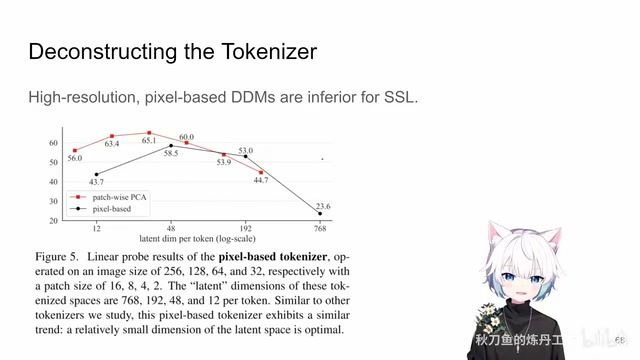
00:19:00–00:20:01 · 画面 043它直接取出这个图像像素块来跟我们这个 projection 之后的 embedding 的尺寸是一样的。那用它来去做性能是怎么样呢？我们来看到黑色这条线，直接使用像素呢还是不如使用这个 tokenizer 使用这个 PCA 的 tokenizer注意这里为什么是 12 对吧？其实这是 4 乘 3 等于 12，也就是说它一个 patch 是一个 2 乘 2 的像素，然后它有三个通道，后面这些都是同理的好。那么到这一步我们设计发现，其实最重要的我们现在的网络为什么比之前过去的这些东西进步了，就是因为有这个 patchwise 这个 tokenizer 这个东西，我们把图像切成 patch 来处理
然后呢，你至于使用哪种 projector 不重要，简单的 PCA 甚至都可以。这个呢是本文一个很有意义的观察。那么再往下呢，作者按照这个思路呢继续的去拆解我们的这个网络，尝试复原到最开始的这个 denodging autoencoder 这样一个过程。那么在我们刚刚拿到这个 PCA baseline 上
00:20:01–00:20:11 · 画面 044
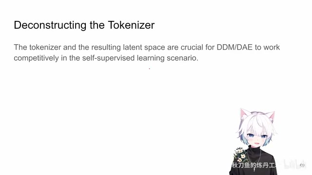
00:20:01–00:20:11 · 画面 04400:20:11–00:21:06 · 画面 045
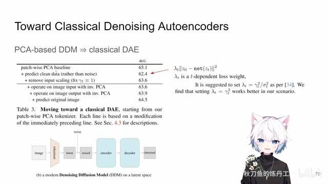
00:20:11–00:21:06 · 画面 045作者做了一系列的操作，首先第一个就是，我如果不是去预测噪声，而是像原来的网络的设计一样去预测干净的值，这真正的去直接去做一个降噪的过程，会发生什么呢？我们看到它对于自监督的性能是下降的，对吧？它的 loss 就是变成直接去预测 Z0。但是直觉上，你想对于不同的 ZT。你是不好使用相同的权重的。因为噪声比较大的时候。这个任务就比较困难。
我们应该允许他多犯一点错误。所以这里作者用这个 LambdaT 去控制。在不同噪声程度下。这个 loss 的权重那么当然这个 LambdaT 怎么样跟你的噪声。这个尺寸就是这个 Sigma 还有 Gamma 来匹配。对吧这也都是有学问的。这里作者发现就直接等于 Gamma 的平方。就可以了那么这个是作者迈向经典的 DAE 的设计的第一步。
你就真的是直接加上一个高斯的噪声了。
00:21:06–00:21:48 · 画面 046
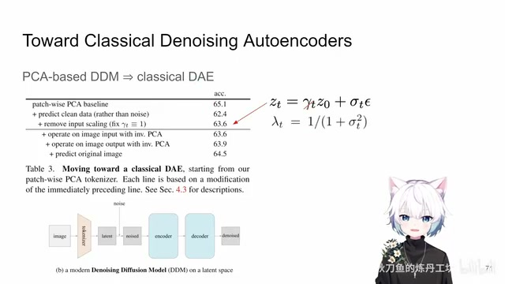
00:21:06–00:21:48 · 画面 046而不是去把它们两个混合起来。为了应对这种情况。因为我们刚刚说了这个 LambdaT。它是等于 GammaT 的现在把 Gamma 拿掉了都定成 1 了。这里作者就把 LambdaT 的式子改成了这个。和 Sigma 相关做完这些操作之后。它的性能是这个样子。那么再往下作者就要探讨 PCA 的影响了。截止到目前我们所有的操作都是原始的图像。
过这个 Tokenizer也就是 PCA得到一个 Latent Space在这个 Latent 里面我们加上各种的噪声去降噪。我们降噪完了之后。这个目标也是跟这个 Latent。原始的 Latent 来比较那么现在我们尝试动一动这个流程。具体来说
00:21:48–00:21:53 · 画面 047
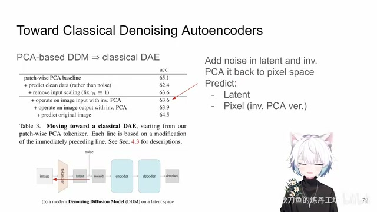
00:21:48–00:21:53 · 画面 047我还是先用这个 tokenizer 把图像变到 latent 里面加好这个高斯噪声然后呢再用这个 PCA 给它把这个 latent 变回到这个图像那这个时候你想你在 latent 里面加了噪声就应该反映到图像上了对吧那么这个示例就显示了原始的图像每个 patch
00:21:53–00:21:54 · 画面 048
00:21:53–00:21:54 · 画面 04800:21:54–00:22:04 · 画面 049
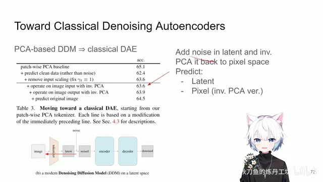
00:21:54–00:22:04 · 画面 04900:22:04–00:22:19 · 画面 050
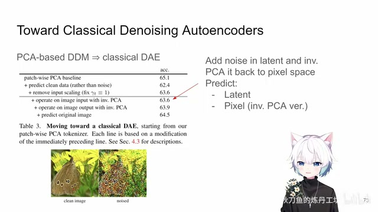
00:22:04–00:22:19 · 画面 050经过 PCA，然后呢，在 PCA 里面加 noise，最后呢，再变回来，形成了这样一个图像。那么拿到这样一张图像之后呢，我们首先还是可以保留原来的这个预测的目标，也就是我们这个带噪声的这个 latent tensor，也就是这个东西。我们也可以依旧预测它，只不过这个时候呢，我们使用的是带噪的图像像素而不是这个 tokenizer 之后的这个 latent。但是呢，我们预测的是一个 latent，这是这一号的配置。
00:22:19–00:22:59 · 画面 051
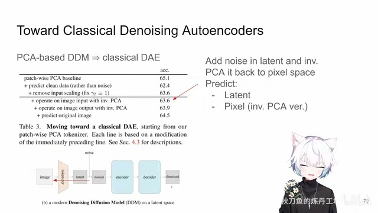
00:22:19–00:22:59 · 画面 051那么再往下呢，我们把这个预测的也换掉对吧？我们去换成这个原始的这个图像的像素。只不过这个图像的像素呢，是我们干净的图像经过 PCA 压缩之后压缩成 latent 再从这个 latent 还原回来的这个图像。这样的图像作为 ground truth。但是虽然这个配置看起来奇怪，你仔细想想它跟我们这个。
00:22:59–00:23:21 · 画面 052
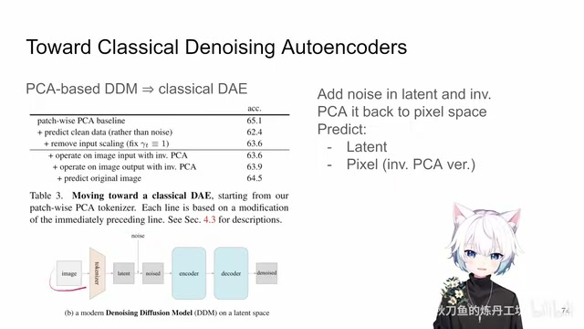
00:22:59–00:23:21 · 画面 052加噪的过程是正好对应的，因为你加噪的过程也是要经过 PCA 进来，在这个 latent 里面加噪再从 PCA 出去，在中间不自然的就引入了这个 PCA 的这个压缩解压缩的过程。所以你要预测 Ground Truth 不应该包含我们 PCA 压缩过程中丢掉的那一部分。所以呢，这里也是要把原始的图像过 PCA 压缩再压缩回来作为我们的目标，这是倒数第二行这个配置。那么再进一步呢，我们很自然的就想到。
00:23:21–00:23:26 · 画面 053
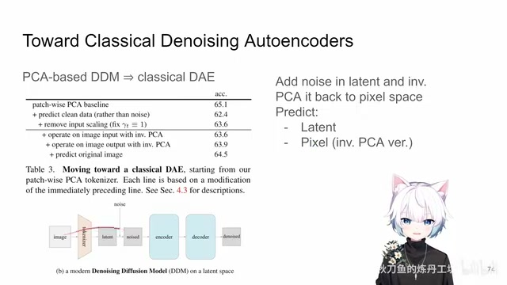
00:23:21–00:23:26 · 画面 05300:23:26–00:25:26 · 画面 054
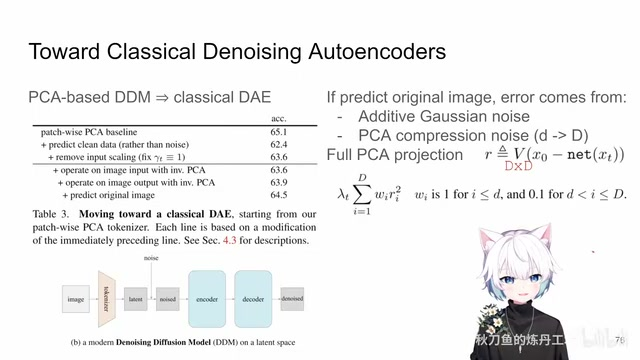
00:23:26–00:25:26 · 画面 054我能不能就直接不要这个 tokenizer 这一块了，我就拿原始的图像直接在它的像素空间上加上噪声，然后扔给我们的网络去恢复我们原始的图像就好了对吧？那么到这里你看，我们加噪的图像送到网络里面跟原始的图像算误差到这一步都还好，但是这个时候我们就要考虑一个因素了，就是我们图像中的每一个像素其实我们对它们。在意的程度是不那么一样的，我们更多的在意希望我们能够恢复出图像的这些主要的结构，而怎么样去方便的拿到一个主要的结构呢？这个时候呢，作者使用我们之前说过的这个 PCA，用它来帮我们确定哪些部分是重要的，我们需要优先满足的。那这个时候呢，我们来看他使用了一个 PCA 分解之后的投影阵。
你做 PCA 分解之后，这次呢，你并不要丢掉一些特征值，而是你把所有的特征值都保留下来，它对应的这个投影的矩阵也都保留下来，然后呢，你把这个残差做一个投影。那经过这样一个投影过后，这个向量的尺寸没有变，还是一个 patch 这样一个大小，但是呢，每行的意义现在不一样了，前面几行就是一些重要的包含这个 patch 中主要信息的这些行。
那后面越排后面的行就越对这个 patch 的信息贡献没有那么大。那么有了这样一个显现之后呢，我们就可以根据它们的重要程度来列我们的 loss 了嘛。那这个时候你看到就是它把前面这个 D 行，就是这个 D 就是我们之前确定的这个 latent 它的尺寸嘛，这 D 行这个权重我就给它直接设成 1，但是后面的这些权重比这个行高得多得多的这些位置它的权重呢，就给它设成了 0.1。这是一个非常有意思的引导 loss 的方法。那最后的 loss 呢，你看到就是这个样子不同行的一个加权核。
00:25:26–00:25:41 · 画面 055
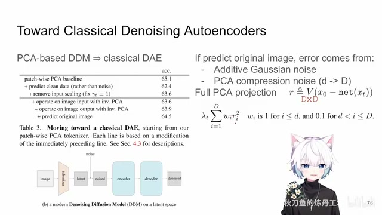
00:25:26–00:25:41 · 画面 055还是前面我们是不是根据我们的加噪的程度不同对这个 loss 做调整？那么到这一步，我们就真正的用现代手段把我们经典的 denoising autoencoder 给它复原回来了。那么再往下作者还试了一些其他的事情，比如说我的 Diffusion 它是分很多步的，我是有很多步，我有很多不同的 noise level 的。现在如果我只使用一个 noise level 会发生什么事情？这个是作者的结果，发现还是 multiple noise level 好用好的。那么到这里，本文最核心的我们一步一步拆解一个 DIT，一直把它还原到 DAE 这样一个过程。
00:25:41–00:26:19 · 画面 056
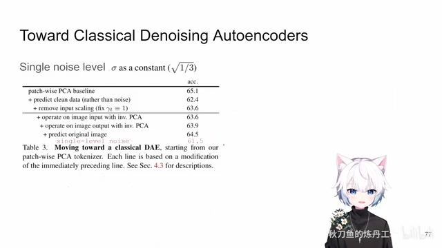
00:25:41–00:26:19 · 画面 056就走完了。那么在这个过程中呢，我们发现最关键的其实就是这个 tokenizer，你怎么样 tokenize 不重要，只要你把它画成一个个 patch，然后稍微压缩一下，你用 PCA 也好，它就能够达到一个相对满意的结果。那具体有多满意呢？这里呢，所谓讨论了不同的 data implementation，不同的训练的长度，不同的这个模型尺寸的大小等等这些影响。那么我们要回答有多满意这个问题。
00:26:19–00:26:37 · 画面 057
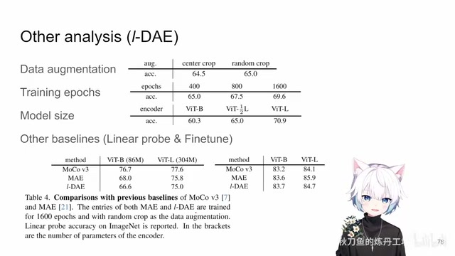
00:26:19–00:26:37 · 画面 057就是跟之前的这些方法对比典型的 Contrastive Learning 的方法 Moco 然后典型的重建的方法 MAE 那经过对比呢你发现本文的这个方法就是 PCAE 转到 latent 里面再做 Denoising 这样的方法其实它的性能呢比不上之前的这些方法而到 fine-tuning 的时候呢它略微有一点优势但是呢随着模型的增大还是不如 MAE 那其实这里就是这篇文章非常有意思的一个点了
00:26:37–00:26:38 · 画面 058
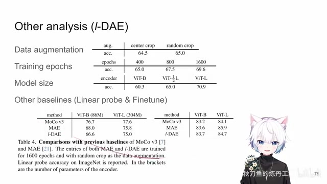
00:26:37–00:26:38 · 画面 05800:26:38–00:27:01 · 画面 059
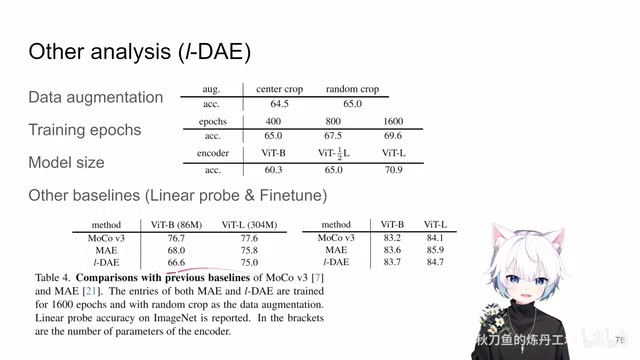
00:26:38–00:27:01 · 画面 059你从一个刷榜刷搜查的角度来讲，这无疑是失败的一些潮池，但是它的价值就是在于从一个标准的现代的设计逐步还原到过去的设计这样的一个过程。
00:27:01–00:27:47 · 画面 060
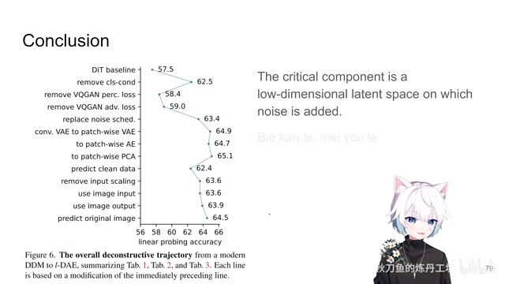
00:27:01–00:27:47 · 画面 060在这个过程里面，它帮助我们理解了种种设计对我们这个 self-supervised learning、linear probing 它的影响。在帮助我们理解这个技术发展的过程上是非常有意义的。所以你说这篇文章要性能吗？没有刷创新点吗？非常有限。但是呢，它依然是一个有意义的文章，而且它发现了一个很重要的结论，就是我们要在一个相对小尺寸的 latent space 里面加 noise。
以上就是我对这个文章的一个非常快速的照本宣科的一个整理，感谢您的收看，请多多指点。
00:27:47–00:27:59 · 画面 061
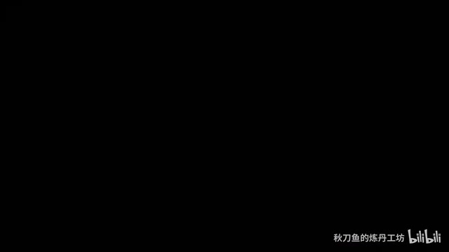
00:27:47–00:27:59 · 画面 06100:27:59–00:29:07 · 画面 062
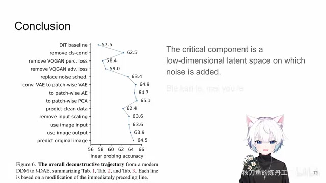
00:27:59–00:29:07 · 画面 062那么还有一个点，其实正好借着这个机会，我也想讲，现在我们科技发达了，人人都有网上了，对吧？你做出来点什么研究，大家都在推特上一发，几个大佬一转，显得非常热闹，然后就逐渐变成了谁的声量大，谁的营销做得好，谁就有更多的 attention。特别是自媒体，大家介绍某个文章的时候，一定是报答什么前作，一定是超越。什么什么终结了吗？等等，这样石破天惊、骇人听闻的标题，那我就时常在想这个问题，我们一定要在这样一个不断的造神然后把神拉下神坛的这样一个循环中去把这个事情做了吗？我们一定要在这样一个大吵大嚷的环境中，为了能让别人听到自己而继续不断的去提高自己的声量，最后让这个环境更加吵闹吗？但是归根到底来呢，现在的情况就是这个样子。
可能还是最终我对这个世界的运行产生了一些不切实际的幻想，我作为一条旧时代的咸鱼，新时代已经没有能炖我的锅了，可能就是这么一个情况。总之还是扯了一些有的没的，看到现在的朋友估计你们是真的已经睡着了，忘记关视频了，正好到这个时间，其实是一个非常有趣的时间，在不知不觉中我们这个频道已经断断续续的运行接近了三年了，那三周年真的是恭喜了。
00:29:07–00:29:47 · 画面 063
00:29:07–00:29:47 · 画面 063那么当然还是这个频道从一开始设计的目的就是作为一种 proxy task 来自己监督自己，把一个文章给他静下心读出来理解了，只不过在这个过程中非常意外、非常荣幸能够受到各位的指点，能够受到各位的督促，真的是非常感谢大家，希望你们都能有一个好的睡眠，好的，那么感谢您的收看，再见。
00:29:47–00:29:58 · 画面 064
00:29:47–00:29:58 · 画面 06400:29:58–00:29:59 · 画面 065
00:29:58–00:29:59 · 画面 065转写与来源说明 · 0 个自动复核提示
保留 110 个原始语音片段，0 个片段触发自动复核提示。提示仅用于定位可能的术语、重复或识别问题，不等于已确认错误。
讲解画面为源视频截图（640×360），不是可编辑 PPT 文件。全片按每秒 2 帧扫描内容变化，逐步展开页保留；连续动画保留代表画面。清晰度受源视频限制。
原视频：paper/合集_2026-10-16_表征学习/[论文简析]Deconstructing Denoising Diffusion Models for SSL[2401.14404].mp4
SHA-256：cc17f27d3fa0ef8b910615b362713ca2f8aee8fbd9d088b5a81f15a8ed9246f9
全文按视频语音与画面制作。原论文可从上方链接下载；完整资料包保留全文、原始逐字稿、字幕和校对记录。